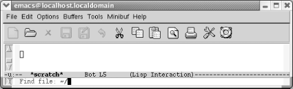
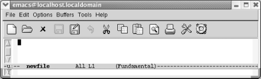
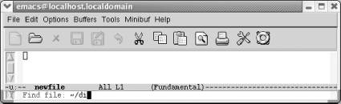
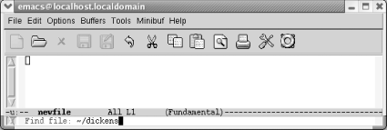
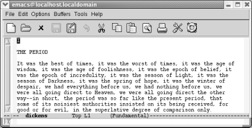

当你通过命令行打开Emacs时，可以指定文件名来打开文件，或者按 C-x C-f 打开 文件（对应的长指令名为： find-file ）.
工具栏上的白纸图标也可以执行这个指令。在一些应用程序中，相似的图标会创 建一个新的，未命名的文件（例如：word程序中文档1）。我们马上会看到Emacs 希望你提供一个文件名。
| 按： C-x C-f |
|  |
Emacs要求你输入一个文件名。
要按 C-x C-f ，按住 Ctrl ，按 x 再按 f ，然后放开 Ctrl 。
按完 C-x C-f 后，Emacs用迷你缓冲区提示你输入文件名。当Emacs希望你输入 时，它就把光标移动到迷你缓冲区。当你完成迷你缓冲区的输入时，按 回车键 。
| 输入： 文件名 回车 |
|  |
| Emacs为新文件启动另一个缓冲区。 |
如果你尝试打开同一文件两次会怎样？Emacs不是创建一个新的缓冲区，而是显 示已经打开的那个缓冲区。
你也可以通过把文件拖曳到Emacs窗口或者Emacs的图标上来打开文件。
如果你还没打开文件就快试试吧。你会发现你更需要学习一些光标移动和编辑的 内容，好！随便略读一下本章其他内容然后看下第二章。最好看一下保存文件和 离开Emacs的章节。如果你想了解更多关于文件操作的快捷键，继续阅读本章后 面的内容。
1.7.1 如果你打开了错误的文件
如果你打开了错误的文件，一个简单的方法来打开正确的文件就是按 C-x C-v （表 示： find-alternate-file ).这个指令的意思是：“打开一个不同的文件来替换当 前文件”。按完 C-x C-v 后，Emacs将当前文件名显示在迷你缓冲区中；你就可以修 正文件名或路径错误，这个最常出现的打开文件错误的原因。修改后按 回车键 。 Emacs将新文件的内容替换到当前缓冲区内。
1.7.2 让Emacs自动补全
Emacs一个很有用的功能就是自动补全。如果你想打开一个现有文件，你只需输 入文件名的前几个字符，这几个字符足以标识指定的文件。按 Tab 键，Emacs自动 补全文件名。假设你要打开文件dikens.
| 输入： C-x C-f di |
|  |
| 按完 C-x C-f ，Emacs提示你输入文件名；输入前几个字母。 |
| 按： Tab |
|  |
| 按完Tab，Emacs将文件名自动补全。 |
| 按： 回车 |
|  |
| Emacs打开文件dickens. |
如果不只一个文件以di开头，Emacs会窗口中显示所有以di开头的文件名。你得 输入更多的字符（必须足以标识唯一文件）来打开想找的文件，然后再按 Tab 键。或者你可以用鼠标选择文件，也可以按 PgUp 将光标移动到“completions” 窗口，移动到需要的选项，按 回车键 。
自动完成也用于补全长指令名称。这是个不错的功能，它即可以节省时间，也可 以向你展示一些现有的而你还不知道的指令。第14章有更多关于自动完成的赞誉。
1.7.3 插入或合并文件
如果你想把一个文件插入到另一个，移动到适当的位置，按 C-x i .(我们还没 有介绍如何移动光标，先使用箭头移动。我们会在第2章介绍Emacs如何移动光 标。)要追加文件，移动到文件尾部 M-> 并输入 C-x i 。和 C-x C-f 一 样，Emacs让你在迷你缓冲区输入文件名。
1.7.4 Emacs如何选择默认路径
当你使用任何需要输入文件名的指令（例如 C-x C-f ）时，Emacs在迷你缓冲区 显示一个默认路径，并让你输入文件名称。Emacs如何选择默认路径？默认路径 来自光标所在缓冲区代表的文件所在的路径。如果你当前编辑的文件在用户目录 下，按 C-x C-f 后，Emacs假设你想打开用户目录的另一个文件。如果你在编辑 文件 /sources/macros/html.macs，然后Emacs设定默认目录为 /sources/macros.如果想在其他目录下查找文件，修改Emacs显示的默认路径。